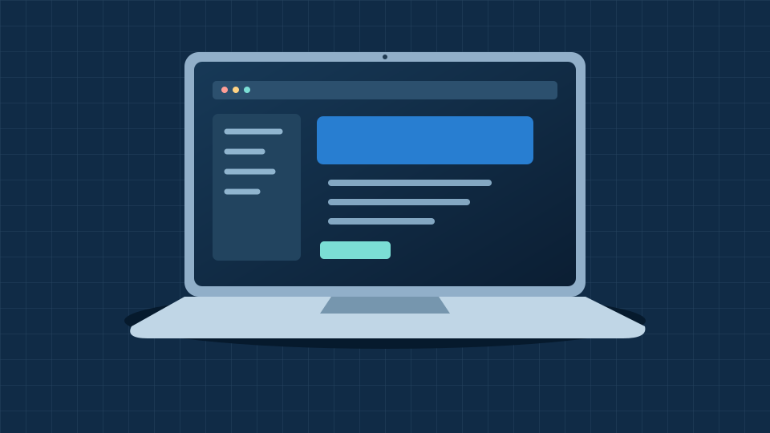
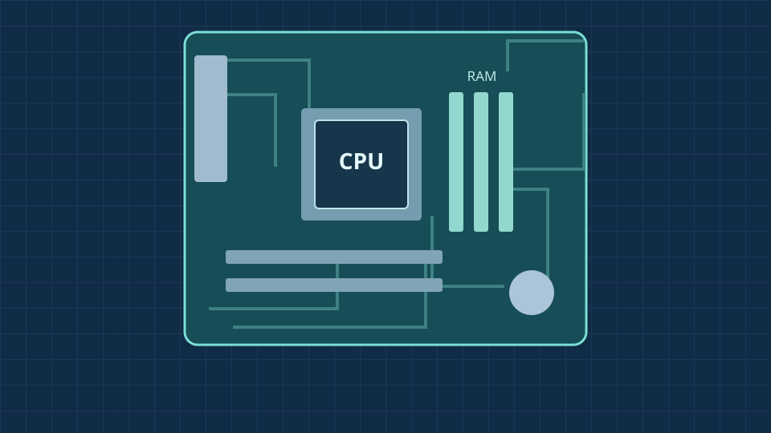

Code.org · IT basics
CPU, memory, input & output
See how a computer takes input, processes information, stores data and produces output.
Watch on YouTube (opens a new tab)Find your starting point
Pick up where you left off
Progress is saved in this browser on this device.
Code.org · IT basics
See how a computer takes input, processes information, stores data and produces output.
Watch on YouTube (opens a new tab)Code.org · IT basics
Explore how physical components and programs work together to run your computer.
Watch on YouTube (opens a new tab)Code.org · IT basics
Discover how electrical signals, light and radio waves carry data between devices.
Watch on YouTube (opens a new tab)
Everyday computing
Learn what the processor, memory, storage and screen do, and which features matter for college work and coding.
Explore laptops
Inside a computer
Get to know the CPU, RAM, motherboard and storage, then see how they work together in a desktop PC.
Explore PC componentsTurn knowledge into practice
Create a page about a hobby, then give it your own style.
Learn about a device you already use, without opening its case.
Make sense of the terminology
Showing all 8 terms. Select a term to read its meaning.
The processor carries out instructions and calculations. It works with memory and the other components in your computer.
Temporary working memory for programs and data in use. Its contents are normally lost when the power is switched off.
A storage device that keeps files and applications using flash memory. It retains data when the computer is off.
A system that helps translate a website’s domain name into the IP address used to reach it.
The language used to structure web pages with headings, paragraphs, images, links and other elements.
The language used to control a web page’s appearance, including colours, fonts, spacing and layout.
A way for devices to connect to a local network using radio waves. Wi-Fi and the internet are different things.
Software that manages hardware and provides services for applications. Examples include Windows, macOS and Linux.
No terms match your search. Try a shorter word or clear the search.
See how far you have come
Tick each skill when you feel confident. Progress is saved in this browser.
Everything in one place